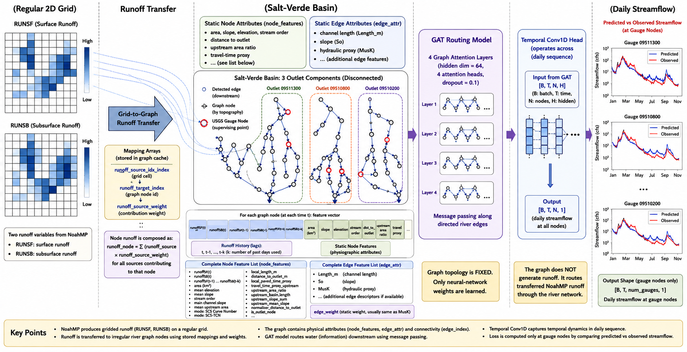
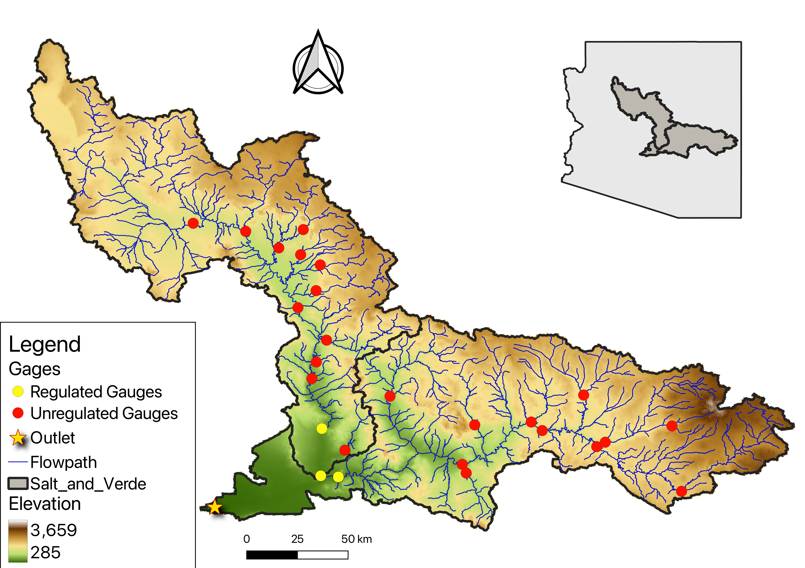
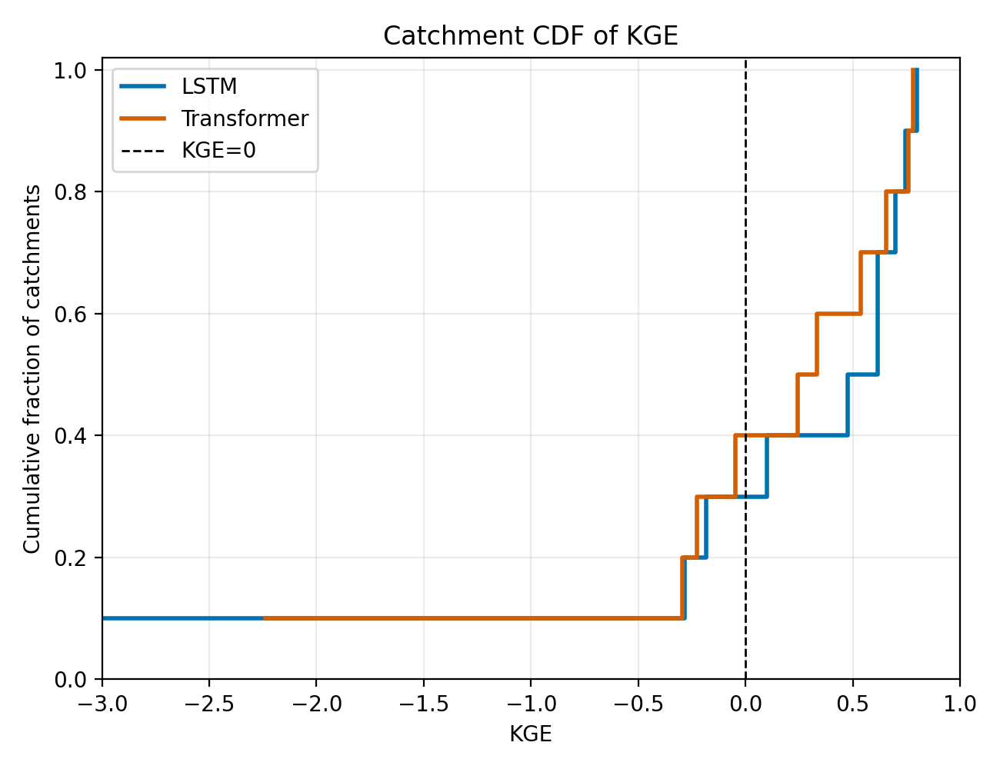

GRAPH LEARNING / HYDROLOGY
RiverGraphNet
Learning streamflow propagation through connected river networks with graph attention and physical attributes.
Read the case study ↗MOHAMMAD A. FARMANI · UNIVERSITY OF ARIZONA
I develop scientific machine learning models and geospatial data workflows to understand and predict water and climate systems.
Ph.D. researcher in Hydrology & Atmospheric Sciences
M.S. student in Data Science · Expected graduation May 2027

SELECTED WORK

GRAPH LEARNING / HYDROLOGY
Learning streamflow propagation through connected river networks with graph attention and physical attributes.
Read the case study ↗
DEEP LEARNING / SOFTWARE
Sequence models, reproducible evaluation, and an interactive dashboard for exploring predictions across catchments.
Explore the project ↗
PHYSICS-AWARE MACHINE LEARNING
Embedding water storage and flux constraints into neural architectures for interpretable hydrologic prediction.
Explore the research ↗HOW I WORK
I connect physical hydrology with machine learning, from model architecture and numerical methods to the data workflows that make experiments reproducible.
More about my background ↗PyTorch, differentiable modeling, graph neural networks, and process-aware architectures.
Python, xarray, Dask, SQL, and spatial data pipelines for large climate and hydrologic datasets.
HPC workflows, model evaluation, automated tests, and reusable open-source tools.
LET’S WORK TOGETHER
Seeking full-time opportunities across the US after May 2027
in scientific ML, climate technology, and geospatial data engineering.